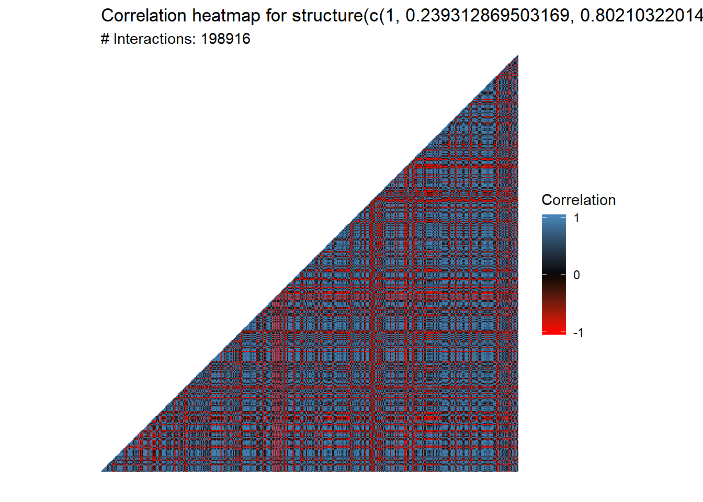
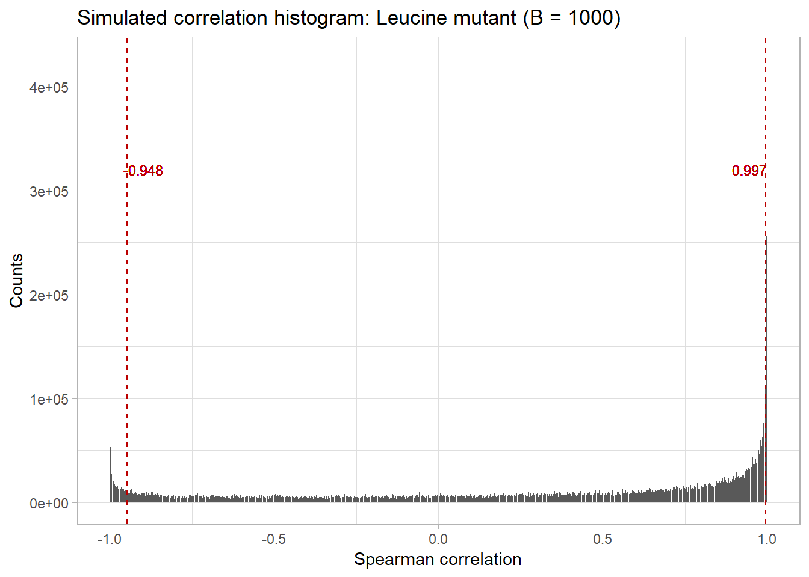
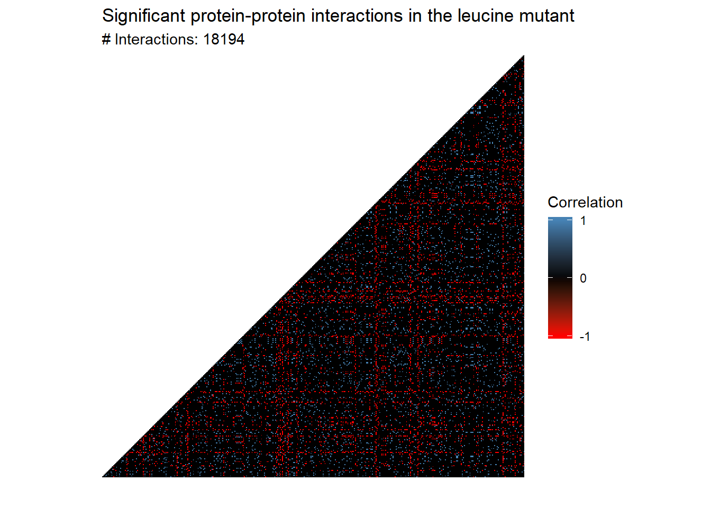
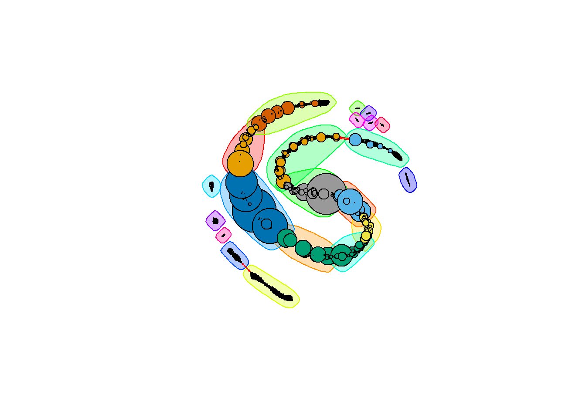
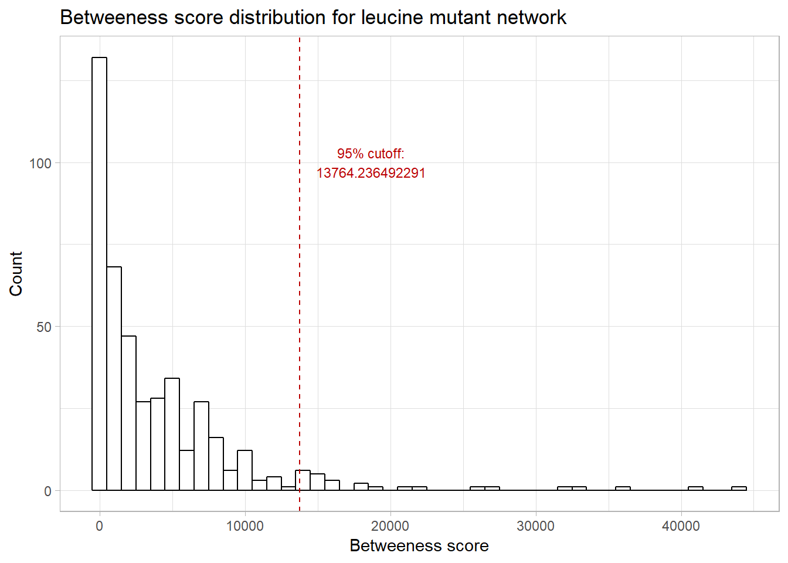
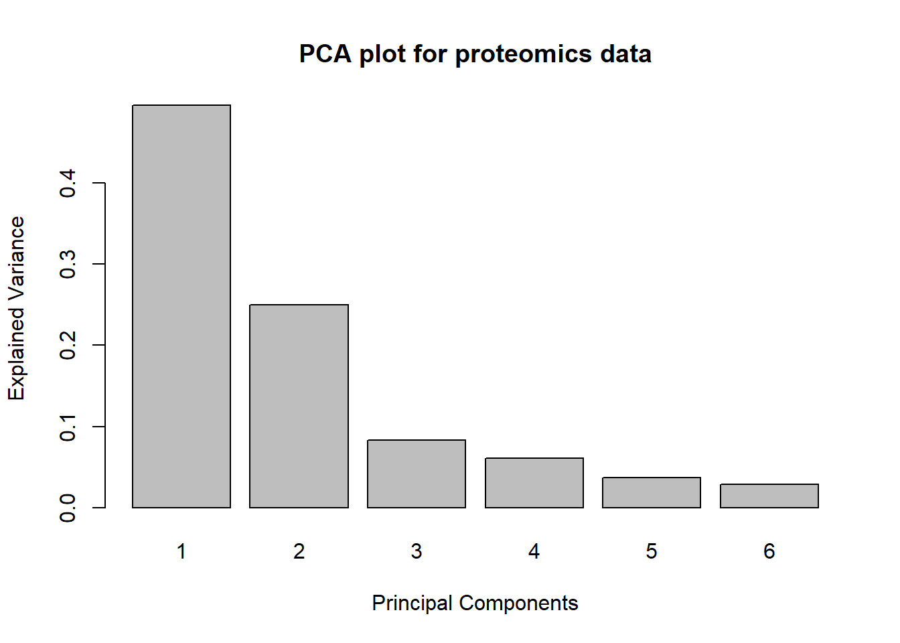
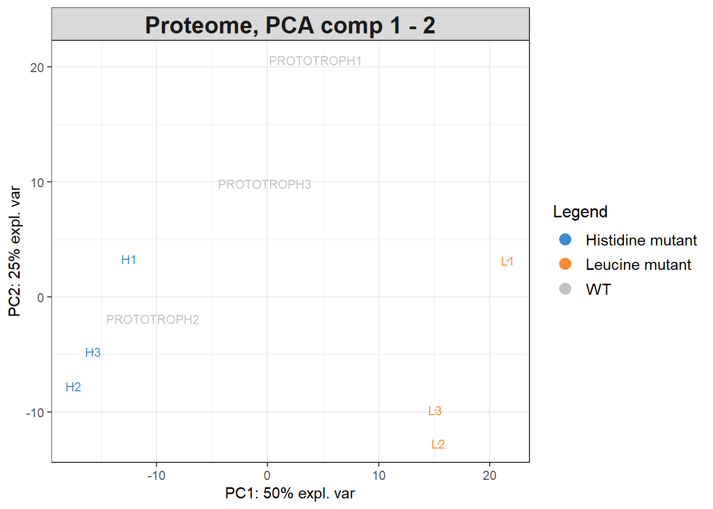
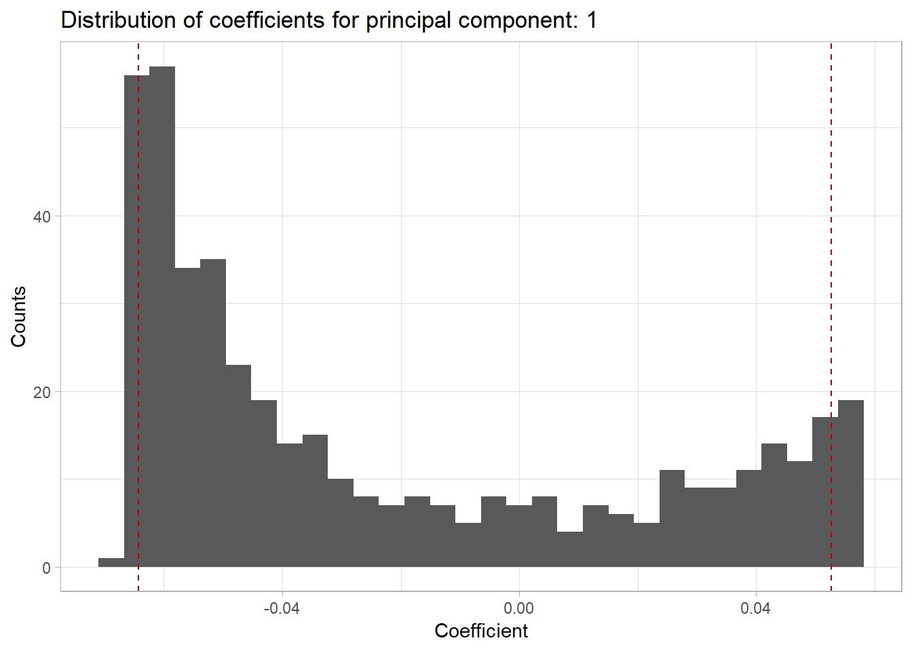

library(mixOmics)
library(reshape2)
source("src/utils.R")src/utils.R contains several functions I wrote to help out today.
proteomics <- read.delim("data/proteomics.txt")Getting correlation for the Luecine mutants:
leucine.treatment_cols <- 11:13
L1_L3.cor <- get_treatment_cor(proteomics, leucine.treatment_cols)Before we plot the network or go any furtherLet’s take a look at the number of interactions that we have found in our network:
plot_cor_heatmap(L1_L3.cor, triangle = TRUE)
That’s nearly 200,000 interactions. We want to filter the number of interactions before we go forward. But how do we filter them?
dbinom.The idea behind choosing a cutoff is that we want to only consider those interactions that are significant, in the sense that they are highly unlikely to occur under the null hypothesis that there is only a random relationship between the two objects. Thus, we will only consider those interactions above our cutoff (or below our lower threshold).
But how do we decide what the cutoff is? In the example above, were able to confidently say that the coin was not a fair one because the chance of a fair coin coming up heads 73 out of 100 times is highly unlikely:
dbinom(73, 100, 0.5)## [1] 1.512525e-06Thus, we reject the null hypothesis that the coin is fair and accept the alternate hypothesis that the coin is unfair. However, in this circumstance, we don’t have a known distribution from which we can choose a threshold. What we can do, however, is to simulate this distribution via resampling the original expression data with replacement. If you’re unfamiliar with this idea, the Wikipedia article is a good place to start, but the main idea is this - in the absence of a known distribution, we can approximate this distribution by resampling from the original data. As we take more and more samples, the distribution of this simulated data (under certain, common conditions) will converge to the true distribution.
The bootstrap_cor function will reshuffle the original expression data, calculate the resulting correlation values, and record these values into a histogram B = 100 times.
L1_L3.boots <- bootstrap_cor(proteomics, treats = leucine.treatment_cols, B = 100)We can then visualize the distribution of the bootstrapped values, as well as 5% and 95% cutoffs, with the
L1_L3.quantiles <- bootstrap_quantiles(L1_L3.boots, 0.10)
plot_bootstrap(L1_L3.boots, L1_L3.quantiles) + labs(title = "Simulated correlation histogram: Leucine mutant (B = 1000)", x = "Spearman correlation")
From here, we can subset our original data by these thresholds:
L1_L3.cor <- threshold_cor_matrix(L1_L3.cor, L1_L3.quantiles)
plot_cor_heatmap(L1_L3.cor, triangle = TRUE) +
labs(title = "Significant protein-protein interactions in the leucine mutant")
From here, we can make a network. The prepare_network function deletes the vertices that have no edges and calculates the betweeness score of each node.
leucine.graph <- graph_from_adjacency_matrix(L1_L3.cor)
leucine.graph <- prepare_network(leucine.graph)We will cluster the graph by betweenness. Note that this can take a very long time to run:
leucine.coms_between <- cluster_edge_betweenness(leucine.graph)
plot(leucine.coms_between,
leucine.graph,
vertex.label = NA,
vertex.size = V(leucine.graph)$btwn * 0.001,
edge.arrow.size = 0.1)
Here, the nodes are sized by their betweenness score; those nodes with larger circles have a higher betweenness. Let’s take a look at the distribution of betweenness scores:
upper_q <- quantile(V(leucine.graph)$btwn, 0.95)
ggplot() +
aes(V(leucine.graph)$btwn) +
geom_histogram(binwidth = 1000, colour="black", fill="white") +
labs(x = "Betweeness score",
y = "Count",
title = "Betweeness score distribution for leucine mutant network") +
geom_vline(xintercept = upper_q, color = "#BB0000", linetype = 'dashed') +
geom_text(aes(x = upper_q , label = paste0("95% cutoff:\n", upper_q), y = 100),
colour = "#BB0000", size = 3, nudge_x = 4900)
Let’s look at those nodes with betweenness in the 95% quantile:
(highest_comm_genes <- names(V(leucine.graph)[V(leucine.graph)$btwn > upper_q]))## [1] "YER055C" "YGR094W" "YPL262W" "YML085C" "YDL075W" "YAL005C" "YLR180W"
## [8] "YBR196C" "YBR127C" "YCL009C" "YLL026W" "YKL181W" "YBR177C" "YNL160W"
## [15] "YHR029C" "YGR162W" "YER057C" "YOR335C" "YLR153C" "YNR021W" "YNL141W"
## [22] "YLR028C" "YDL086W"We can then write these names out to a file:
write.table(highest_comm_genes, "high_betweenness_genes.txt",
row.names = FALSE,
col.names = FALSE,
quote = FALSE)We’ll start with a PCA of the proteomic data. To do so, we will first extract the numeric data from the data frame and rename the columns so that we can investigate the loadings later.
proteomics.expression_data <- t(proteomics[8:16])
colnames(proteomics.expression_data) <- proteomics$UNIQIDFrom here, we just call the pca function:
pca.proteome <- pca(proteomics.expression_data, ncomp = 6,
center = TRUE,
scale = TRUE)We can then do a few different plots. The first one tells us how much variance is explained by each principal component - that is, how much of the original data can we recover if we just use the first n principal components?
plot(pca.proteome,
main = "PCA plot for proteomics data")
We can also plot the original data on these principal components:
groups<-data.frame(genotypes=c(rep("Histidine mutant", 3),
rep("Leucine mutant", 3),
rep("WT", 3)),
replicates=c("H1","H2","H3","L1","L2","L3","PROTOTROPH1","PROTOTROPH2","PROTOTROPH3")
)
plotIndiv(pca.proteome, comp = c(1, 2), group = groups$genotypes,
ind.names = groups$replicates,
legend = TRUE, title = 'Proteome, PCA comp 1 - 2') 
We can also look at the loadings of each of the original factors in the PCA. For example:
pca.proteome$loadingsWe can also look at a histogram of the weights for each of the principal components using pca_nth_component_histogram from utils.R:
pca_nth_component_histogram(pca.proteome, 1)## `stat_bin()` using `bins = 30`. Pick better value with `binwidth`.
Here the red lines correspond to the upper and lower 5% quantiles.
Paul Villanueva
Ph.D. Student - Bioinformatics and Computational Biology
Iowa State University, Ames, IA.